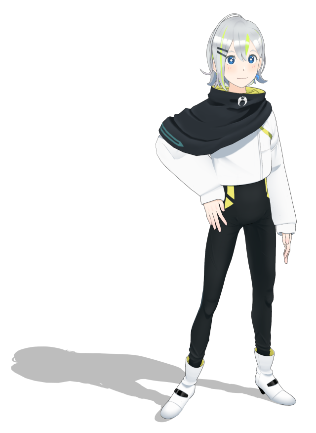

WINDOWS / PYTHON STDLIB / LOCALHOST:8765
施設の案内を、
施設の案内を、
自分のパソコンで。
音声入力、Gemini APIによる回答生成、COEIROINKの音声合成、MMDAgent-EXの3Dキャラクター表示を1台のWindows PC上で連携させる、観光・施設向けの汎用案内アシスタントです。
追加pipパッケージ不要
2.5秒無音で自動送信
DPAPI暗号化保存
施設フォルダ分離

01 / ARCHITECTURE
仕組みと対話の流れ
Python標準ライブラリだけで動くローカルサーバー（app.py）が中心となり、各ソフトウェアと外部APIを仲介します。
- 01 音声待受 Chrome / Edge のマイクで音声を取得し、最後の発話から2.5秒間の無音で自動的にマイクを切って送信します。
- 02 考え中 MMDAgent-EX に思考モーションを送り、施設資料と会話履歴（直近6往復）をもとに回答を生成します。日常の雑談にも対応します。
- 03 音声準備 思考モーションを継続したまま、施設ごとの読み辞書を適用して COEIROINK で WAV 音声を合成します。
- 04 発話同期 MMDAgent-EX の音声開始通知（SOUND_EVENT_START）に合わせて回答文を画面に表示し、口パク再生を行います。
- 05 即時再開 音声終了通知（SOUND_EVENT_STOP）を受け取ると即座にマイク待受を再開し、次の質問へ移ります。
02 / CUSTOMIZATION
setup.bat による施設設定
設定ファイルを直接編集しなくても、同梱のGUI管理ツール（setup_wizard.py）の5つのタブから初期設定と運用中の更新を行えます。
03 / DEPLOYMENT
導入手順とデータ分離
必要なソフトウェアを用意し、setup.bat で設定を行ったあと、日常の運用では start.bat を起動するだけです。
| Python 3.11+ | 公式サイト（python.org）から導入。インストール時の「Add python.exe to PATH」チェックが必須です。追加パッケージは不要です。 |
|---|---|
| COEIROINK v2 | 公式サイト（coeiroink.com）から展開し、話者音声を導入します（初期設定のクレジット表記は COEIROINK:つくよみちゃん）。 |
| MMDAgent-EX | 公式サイト（mmdagent-ex.dev）から展開します。起動時に guide.fst / guide.mdf が設定から自動生成されます。 |
| ブラウザ | Web Speech API による音声入力を利用するため、Google Chrome または Microsoft Edge を既定ブラウザに設定します。 |
git clone https://github.com/TomoakiMitsu/mmd-voice-guide-assistant.git
cd mmd-voice-guide-assistant
# 1. setup.bat を起動して施設ID（sample以外）・APIキー・キャラを設定
# 2. start.bat を起動してサーバー・COEIROINK・MMDAgent-EX・ブラウザを開始
python -m unittest discover -s tests -v
cd mmd-voice-guide-assistant
# 1. setup.bat を起動して施設ID（sample以外）・APIキー・キャラを設定
# 2. start.bat を起動してサーバー・COEIROINK・MMDAgent-EX・ブラウザを開始
python -m unittest discover -s tests -v
Git管理対象（公開されるファイル）
- プログラム本体（app.py, setup_wizard.py 等）
- 設定テンプレート（config.example.json, .env.example）
- 素の施設雛形（facilities/sample/）
- 同梱キャラクターモデル（assets/mmd/gene/, uka/）
.gitignore 除外対象（ローカル専用）
- APIキー類（.env, runtime/*.dpapi, *.key）
- 独自施設フォルダ（facilities/sample/ 以外のすべて）
- 環境別設定（config.json, launcher.local.json, guide.*）
- 会話ログ・エラー記録・一時音声（runtime/）